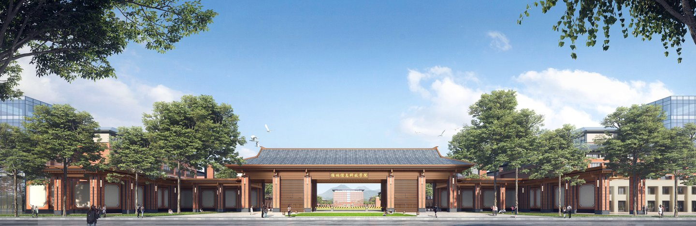
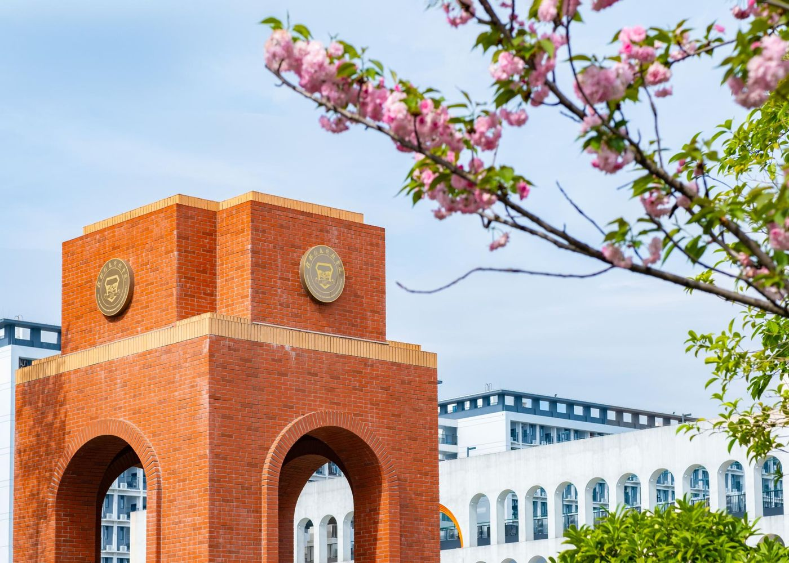
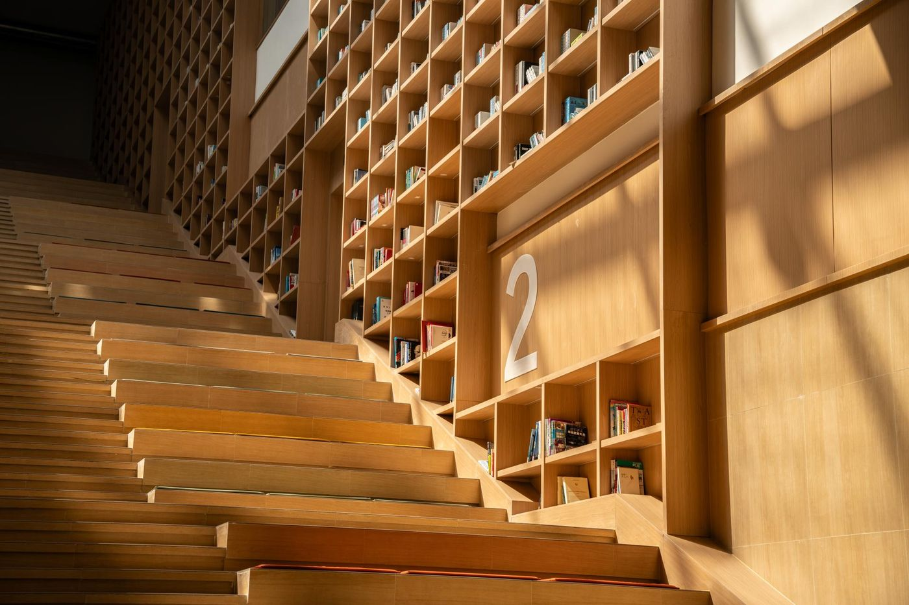
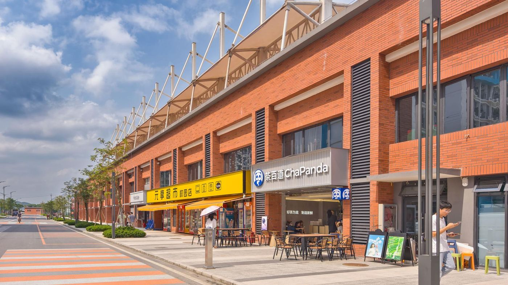
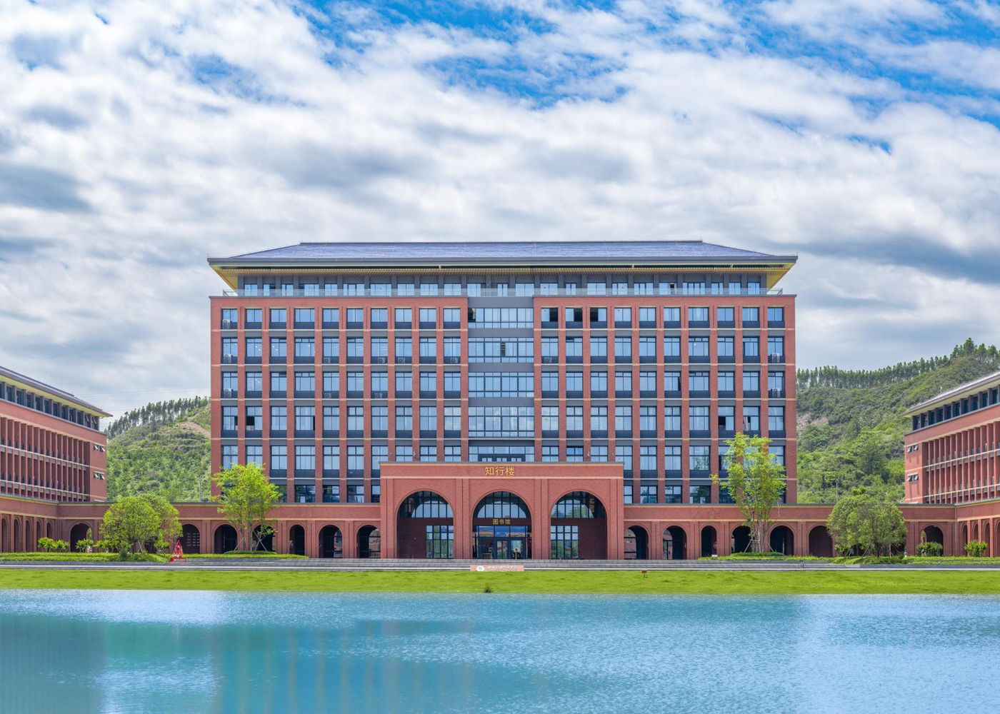

桂林信息科技学院创建于 2001 年，前身为桂林电子工业学院信息科技学院，2021 年经教育部批准转设为独立设置的民办普通本科高校。学校赓续桂林电子科技大学的学科专业优势，以工为主、电子信息类学科专业特色突出，工学、管理学、艺术学等多学科协调发展。
学校坐落于山水甲天下的桂林市临桂区，秉持「以终为始、以生为本」的办学理念，立足桂林，服务广西，融入粤港澳大湾区，培养高素质应用型人才。


紧密围绕国家发展新质生产力的战略需求，优化专业布局，打造八大专业集群，更好地服务国家及区域经济社会发展。
拥抱人工智能时代，培养 AI、数据与安全领域的应用型人才。
面向通信、软件与网络产业，打牢“软硬结合”的信息类人才基础。
对接智能制造与机器人产业，覆盖设计、制造到控制的全链条培养。
聚焦新能源与智能电气方向，服务能源电子与智能装备产业。
创意与技术融合，培养数字内容、虚拟现实与设计表达兼备的创作人才。
“商业 + 数据 + 管理”复合培养，锻造数字商业时代的新商科人才。
立足桂林国际旅游名城，面向东盟与粤港澳大湾区培养经贸与服务人才。
服务“健康中国”与文旅产业，培养体育健康领域应用型人才。
涵盖工、管、文、理、经济、艺术、教育 7 大学科门类。以下为各学院与代表性专业（完整专业目录见「院系与专业」页）。
面向软件、网络与人工智能产业，信息类核心专业群。
学校电子信息特色的主力学院，实践与产业结合的“新工科”阵地。
对接智能制造、机器人与新能源装备产业的工科强院。
“数智商科”方向，商业、数据与管理交叉融合。
艺术与科技融合，数字创意与交互设计的人才摇篮。
服务中国—东盟合作与大湾区经贸往来。
服务“健康中国”战略，体育与康复人才培养新阵地。
通识素养课堂与思政育人阵地，夯实“德智体美劳”全面发展的底色。
占地 1331 亩的校园里，光影、四季、建筑与青春都在讲述故事。以下为「校园风光」六个主题的一瞥。



以下标题整理自学校官网近期发布内容（2026年8月—9月）。
来都来了，做 8 道小题，看看你离“信科通”还有多远。答案都藏在本站里哦。
加载中…